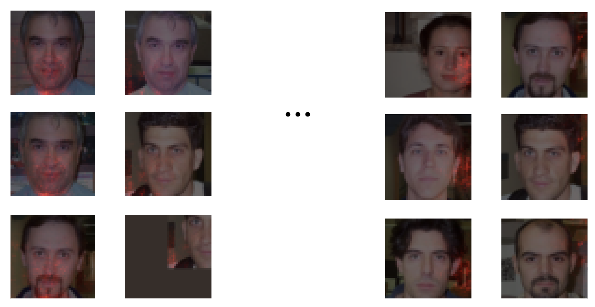
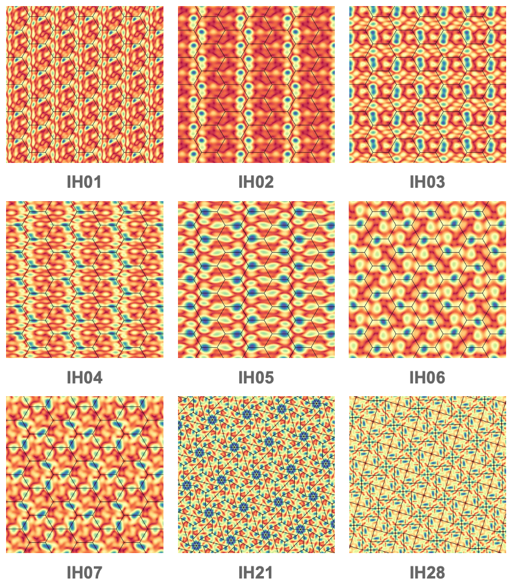

|
Hi, I am Dwip Dalal, a first year PhD student in the Computer Vision and Robotics Laboratory at the University of Illinois Urbana-Champaign. I am advised by Prof. Narendra Ahuja. My research interests lie in LLMs, vision, natural language processing, generative AI, and multi-modal representation learning. Previously, I completed my B.Tech from Indian Institute of Technology, Gandhinagar, where I was awarded the Institute Gold medal for graduating at the top of my batch. E-mail | GitHub | Google Scholar | LinkedIn | X |

|
Internships

UBC
2023 Summer |

AIISC
2022-2024 |

ISRO
Spring 2023 |

TCS Research
Winter & Spring 2023 |
DRDO
Spring & Summer 2022 |

EFICENS
Summer 2022 |
News
- Aug 2024: Awarded the Dilip and Sandhya Sarwate Graduate Fellowship at UIUC for the 2024-2025 academic year, recognizing outstanding incoming graduate students in signal processing.
- Jun 2024: Awarded the Institute Gold Medal at IIT Gandhinagar for achieving the highest CGPA in the discipline.
- Feb 2024: Nominated by IIT Gandhinagar for the prestigious Pre-Doctoral Research Assistant Program at Microsoft Research India.
- 2023: Secured a perfect 10/10 GPA for two consecutive semesters (6th & 7th), each comprising a rigorous 26-credit course load.
- Sep 2023: Secured the 1st position out of 200 participants in a machine learning hackathon organized by SmartSense Consulting Solutions Pvt. Ltd., earning a job offer as ML Engineer II.
- Jun 2023: Received a Travel Award from IIT Gandhinagar to attend the ACL 2023 conference in Toronto.
- Jan 2023: Secured 1st rank in the Undergraduate Research Showcase at IIT Gandhinagar for research on AI-enabled on-device drones.
- Dec 2022: Awarded the Shastri Indo-Canadian Institute Scholarship for continuing research at the University of British Columbia, recognized as a "promising researcher."
- Dec 2022: Selected as a MITACS Globalink Research Fellow at the University of British Columbia under Prof. Yankai Cao and Dr. Dongsheng Xiao.
- Sep 2022: Selected for Citi Bank’s Summer Internship in the Analyst role.
- Jul 2022: Secured 1st rank in the competitive programming contest at IIT Gandhinagar, participated in by B.Tech, M.Tech, and Ph.D. students.
- Apr 2022: Selected among the Top 3 teams for Innovation-Driven Entrepreneurship (IDE) 4.0: The National Bootcamp at Bangalore, based on a proposal for using AI in intelligent business planning and financial management.
- Mar 2022: Achieved 1st rank in Hackrush’22, the flagship machine learning hackathon at IIT Gandhinagar.
- Jun 2021: Secured 1st rank in the IITGN Summer Project for building the most efficient NLP classification model.
Research |

|
FACTIFY-5WQA: 5W Aspect-based Fact Verification through Question AnsweringAnku Rani, SM Tonmoy, Dwip Dalal, Shreya Gautam, Megha C., Aman Chadha, Amit Sheth, Amitava Das ACL 2023 Main Conference Paper | project page |

|
Learning Robust Deep Visual Representations from EEG Brain RecordingsPrajwal Singh, Dwip Dalal, Gautam Vashishtha, Shanmuganathan Raman, Krishna Prasad Miyapuram WACV 2024 (featured in WACV Daily and Best of WACV 2024) Paper | project page | WACV Daily | Best of WACV 2024 |

|
FACTIFY3M: A Benchmark for Multimodal Fact Verification with Explainability through 5W Question-AnsweringM Chakraborty, K Pahwa, A Rani, S Chatterjee, Dwip Dalal, H Dave, ... A Chadha, Amit Sheth, Amitava Das EMNLP 2023 Main Conference Paper | Project Page |

|
Single Image LDR to HDR Conversion Using Conditional DiffusionDwip Dalal, Gautam Vashishtha, Prajwal Singh, Shanmuganathan Raman International Conference on Image Processing (ICIP’23) (Oral) Paper | Project Page |

|
ODESolvers are also Wayfinders: Neural ODEs for Multi-Agent PathplanningDwip Dalal*, Progyan Das*, Anirban Dasgupta NeurIPS 2023 Workshop - Deep Learning and Differential Equations III Paper | abstract |

|
MMT: A Multilingual and Multi-Topic Indian Social Media DatasetDwip Dalal, Vivek Srivastava, Mayank Singh EACL 2023 workshop - Cross-Cultural Considerations in NLP Paper | abstract |
|
SEPSIS: I can catch your lies - A new paradigm for Deception DetectionAnku Rani, Dwip Dalal, Shreya Gautam, Pankaj Gupta, Vinija Jain, Aman Chadha, Amit Sheth, Amitava Da Arxiv, 2024, Paper | abstract |

|
Learning to Stabilize: Comparative Analysis of Reinforcement Learning and Traditional Methods for Swirling Pendulum ControlDwip Dalal, Shubhankar Riswadkar, Harish J Palanthandalam-Madapusi IEEE Indian Control Conference 2023 Paper | abstract |
 |
Surrogate Faithfulness: A Metric for Concept-Based ExplanationsShubham Kumar, Dwip Dalal, Narendra Ahuja Arxiv, 2025 |
 |
Flow Symmetrization for Parameterized Constrained DiffeomorphismsDwip Dalal*, Aalok Gangopadhyay*, Progyan Das*, Shanmuganathan Raman Arxiv, 2024 Paper | abstract |

|
Enhancing Cameras with Conditional Diffusion ModelCamerDwip Dalal, Gautam Vashishtha, Prajwal Singh, Shanmuganathan Raman CVPR 2023 workshop - Computational Cameras and Display CCD Poster |

|
VPTDrone: Video Processing Toolkit for Smart Surveillance DroneDwip Dalal, Anirban Dasgupta 7th Joint International Conference on Data Science & Management of Data, 2024 Paper |